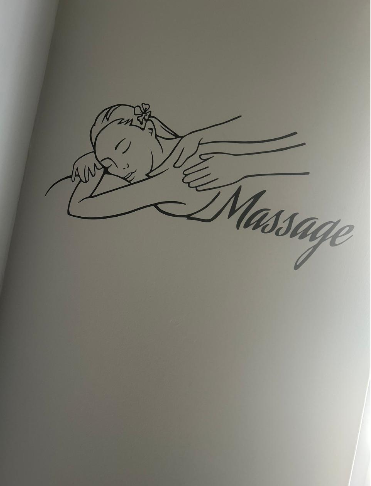

About Pabii's Retreat

Pabii's Retreat is a wellness sanctuary that provides personalised therapeutic and wellness experiences designed to help clients step away from everyday life and focus on relaxation, self-care and well-being.
Pabii's Retreat was founded by Pabi in July 2026. The business was established to create a peaceful and welcoming environment where clients can relax, restore their balance and relieve stress.
Why Pabii's Retreat Was Started
Pabii's Retreat was created because everyday life can be stressful and people need opportunities to relax, recharge and take care of their well-being.
The Retreat aims to provide clients with a comfortable space where they can take a break from their daily responsibilities and enjoy personalised wellness and therapeutic treatments.
The business is focused on helping clients calm the mind, relax the body and develop a greater sense of well-being.
Our Mission
We aim to provide exceptional and personalised therapy that calms the mind, relaxes the body, lifts the spirit and creates a lasting sense of well-being for our clients.
Our Vision
Our vision is to become a respected, leading and reputable centre of excellence by providing high-quality wellness and therapeutic services to our clients.
Pabii's Retreat aims to create a trusted wellness environment where clients can return regularly for relaxation, self-care and personalised therapeutic experiences.
What We Offer
Pabii's Retreat offers a range of therapeutic and wellness services. Some of our featured treatments include:
Full Body Massage
A relaxing treatment designed to help clients release tension and enjoy a peaceful wellness experience.
Hot Stone Therapy
A calming therapeutic treatment designed to promote relaxation and comfort.
Facial Treatment
A refreshing treatment designed to care for the skin while providing a relaxing experience.
Swedish Massage
A therapeutic massage option designed to provide relaxation and support overall wellness.
Our Target Audience
Pabii's Retreat is intended for individuals who need time away from everyday life to rest, recharge and regain their energy.
Our target audience includes people who are interested in relaxation, self-care, stress relief, wellness and personalised therapeutic treatments.
The Retreat aims to provide a welcoming experience for clients looking for a peaceful environment and quality wellness services.
Take Time for Yourself
Discover a peaceful wellness experience at Pabii's Retreat.
Make an Enquiry